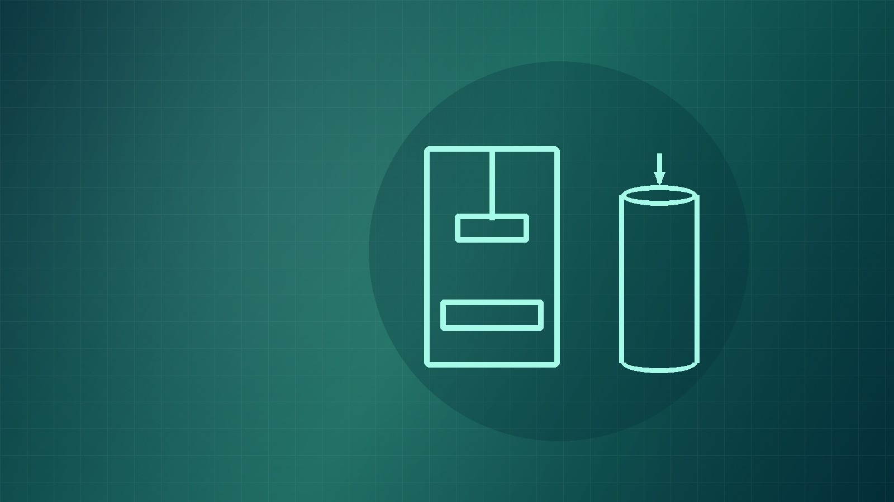

VeriMat Materials Testing Laboratory provides reliable testing services for soil, concrete, aggregates, and other construction materials to support quality-focused construction projects.

We provide a range of materials testing services to support construction and engineering projects.
Checks whether soil has reached the required level of compaction.
Learn moreEvaluates selected construction materials based on project requirements.
Learn moreWe are committed to providing reliable, professional, and quality-focused materials testing services.
Consistent and dependable testing services.
Clear and organized support for engineering and construction needs.
Testing information presented clearly for project decisions.
Materials testing information designed to support construction projects.
Contact VeriMat to learn more about our testing services and submit an inquiry about your project.
Contact Us